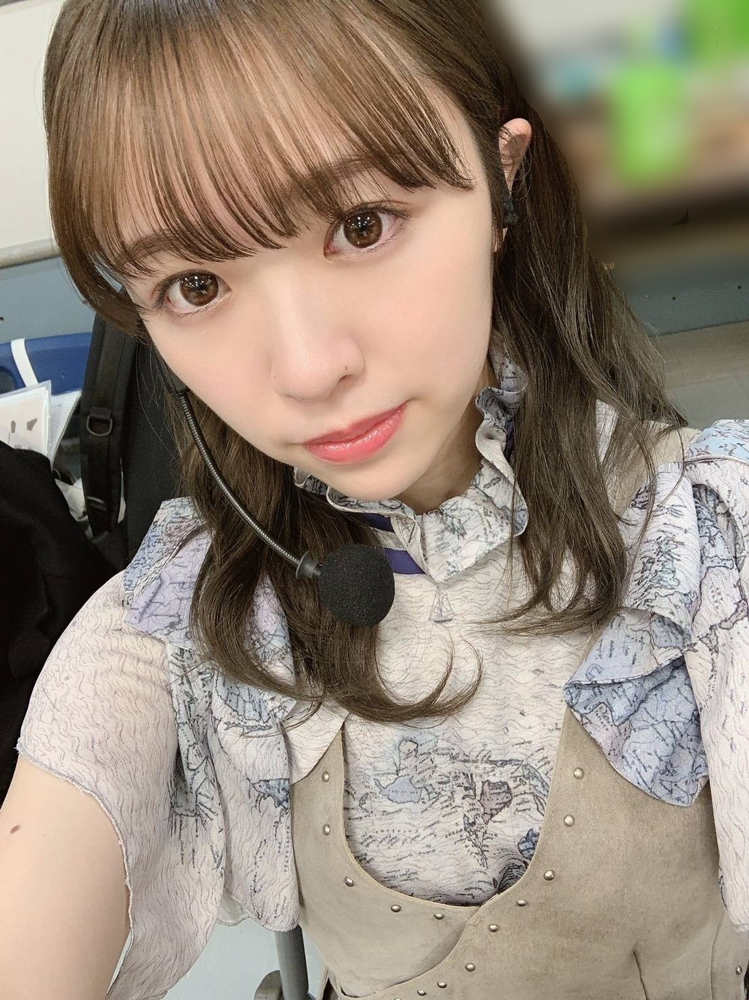
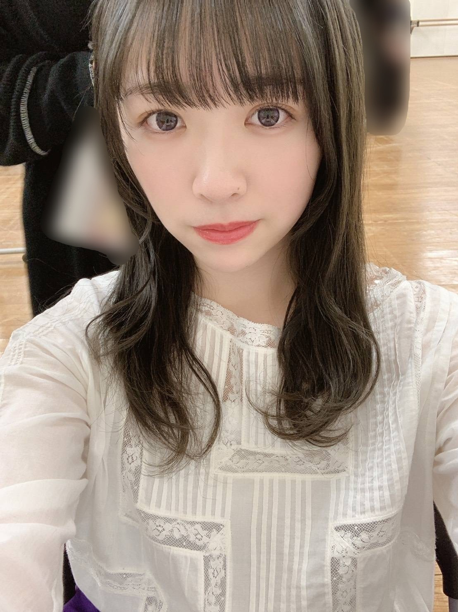
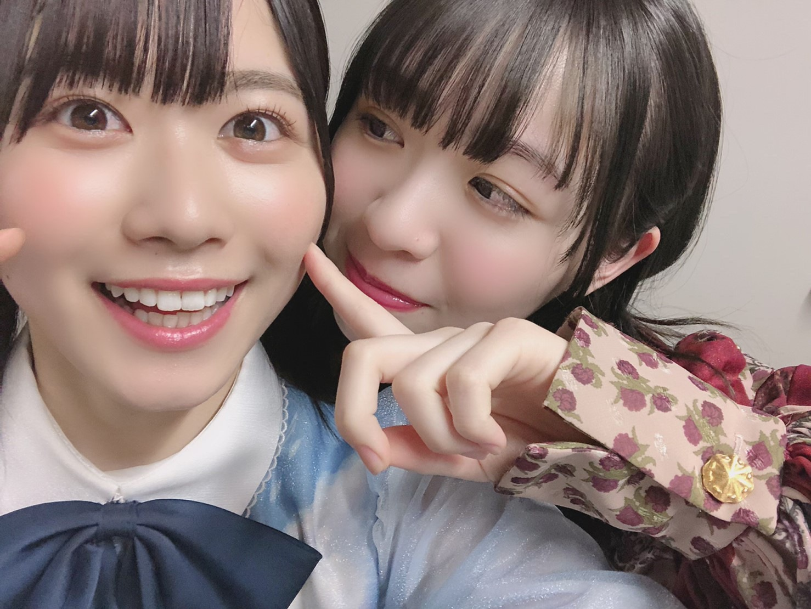
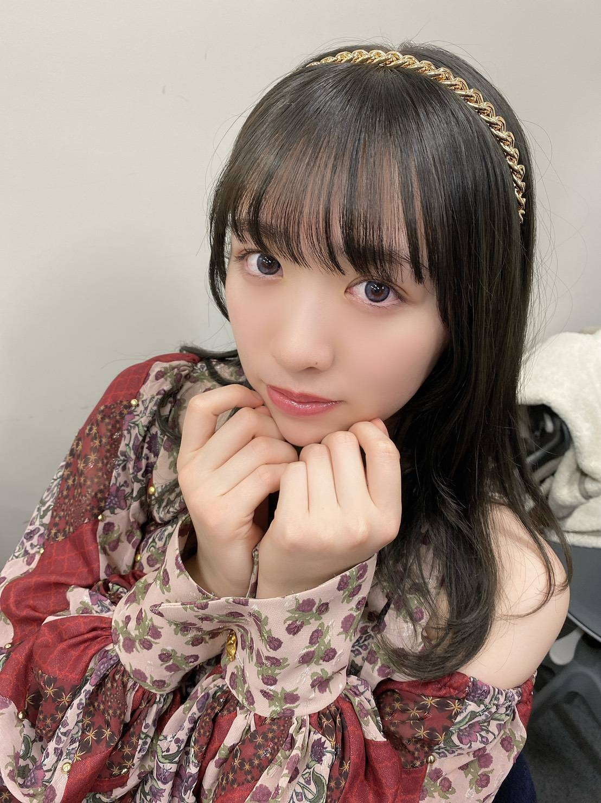
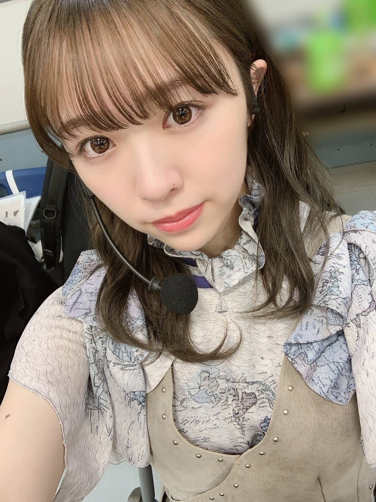
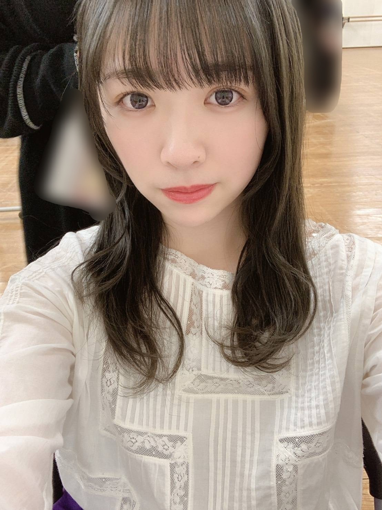
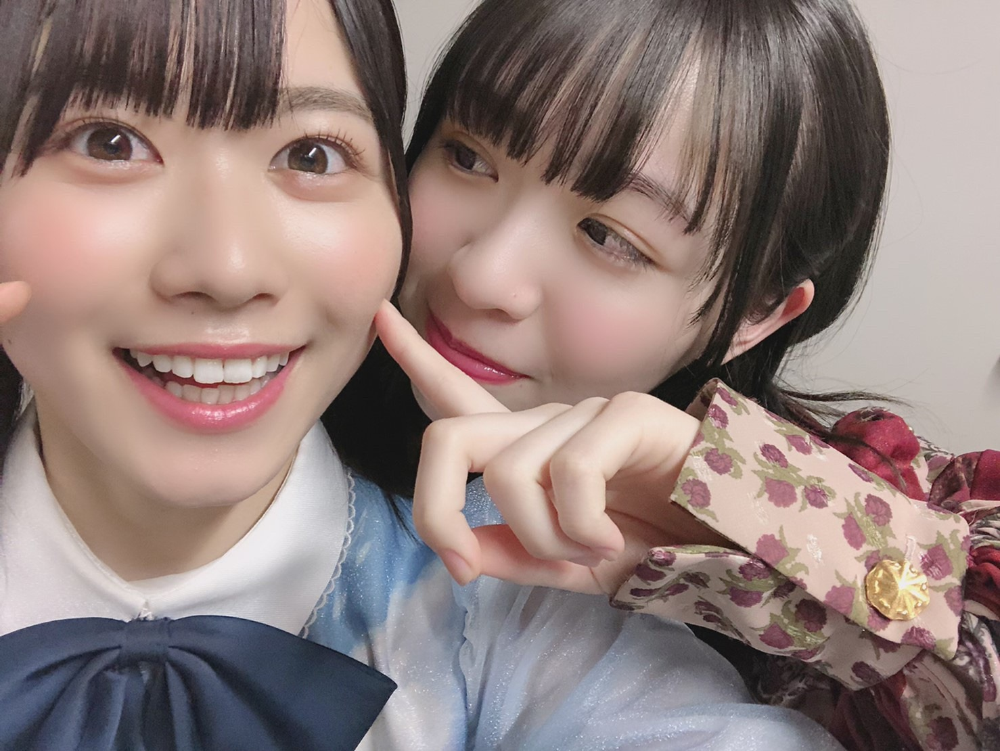
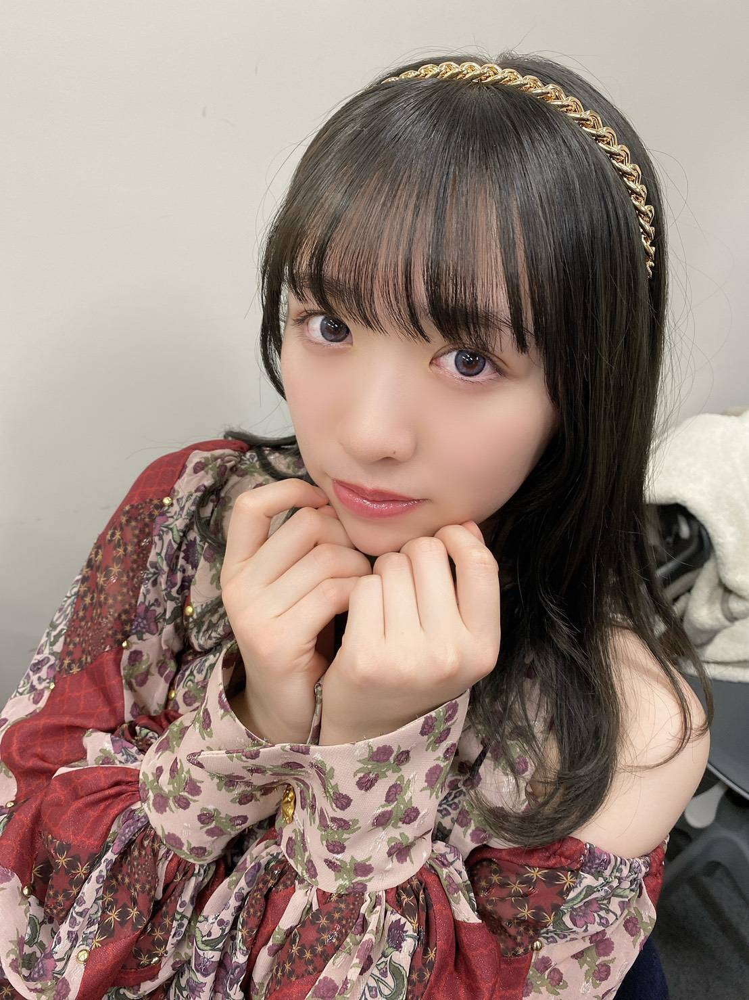

2019/1231Tue皆様良いお年を
今年も残すところあと数時間となってまいりました。
早いですねえ、あっという間です！

今年は沢山の歌番組に出演させて頂きました。
一つ一つ気持ちを込めて全力でパフォーマンスしました。
届いていたでしょうか、、！
そして昨日はレコード大賞に出演させて頂きました
受賞されたアーティストの皆様、
おめでとうございます！
そしてレコード大賞を受賞されたFoorinの皆さん
おめでとうございます！
Sing Out!は私の初めての選抜曲
まさかレコ大で踊れるとは思ってもいなくて
あんまり顔に緊張を出さないタイプですが
昨日は流石に物凄く緊張していたみたいで
周りのメンバーが「大丈夫だよ！」という
優しい言葉をかけてくれました。
あの場で披露出来たという事に
とても嬉しく、感謝をしています。

そして本日は紅白歌合戦
毎年出させて頂いている事を嬉しく思います！
今年はシンクロニシティ
欅坂46、日向坂46のみんなも参加してくれます！
そして内村さんも！
お忙しい中振り付けを覚えて下さり恐縮です、、、
全員で、心をぐっと掴めるようなパフォーマンスが
出来るよう精一杯披露させて頂きます！
宜しくお願い致します。

日向坂46の丹生明里ちゃん
私を見つけたら満面の笑みで風のように走ってきて
沢山お話してくれる姿が妹みたいで
可愛くて愛おしい(^ ^)
来年はすぐ会う！って約束したので
早く叶えましょうね！
紅白、宜しくね！

ポーズ考案・撮影:堀未央奈
20±SWEET2020JANUARY
週刊ヤングマガジン
週刊プレイボーイ
発売中です！オフショットなどはまた後々に。
今年も沢山応援して下さりありがとうございました
来年も宜しくお願い致します！
はああ、緊張する〜〜！！
それでは、行ってきます。
みり愛
今年も残すところあと数時間となってまいりました。
早いですねえ、あっという間です！

今年は沢山の歌番組に出演させて頂きました。
一つ一つ気持ちを込めて全力でパフォーマンスしました。
届いていたでしょうか、、！
そして昨日はレコード大賞に出演させて頂きました
受賞されたアーティストの皆様、
おめでとうございます！
そしてレコード大賞を受賞されたFoorinの皆さん
おめでとうございます！
Sing Out!は私の初めての選抜曲
まさかレコ大で踊れるとは思ってもいなくて
あんまり顔に緊張を出さないタイプですが
昨日は流石に物凄く緊張していたみたいで
周りのメンバーが「大丈夫だよ！」という
優しい言葉をかけてくれました。
あの場で披露出来たという事に
とても嬉しく、感謝をしています。

そして本日は紅白歌合戦
毎年出させて頂いている事を嬉しく思います！
今年はシンクロニシティ
欅坂46、日向坂46のみんなも参加してくれます！
そして内村さんも！
お忙しい中振り付けを覚えて下さり恐縮です、、、
全員で、心をぐっと掴めるようなパフォーマンスが
出来るよう精一杯披露させて頂きます！
宜しくお願い致します。

日向坂46の丹生明里ちゃん
私を見つけたら満面の笑みで風のように走ってきて
沢山お話してくれる姿が妹みたいで
可愛くて愛おしい(^ ^)
来年はすぐ会う！って約束したので
早く叶えましょうね！
紅白、宜しくね！

ポーズ考案・撮影:堀未央奈
20±SWEET2020JANUARY
週刊ヤングマガジン
週刊プレイボーイ
発売中です！オフショットなどはまた後々に。
今年も沢山応援して下さりありがとうございました
来年も宜しくお願い致します！
はああ、緊張する〜〜！！
それでは、行ってきます。
みり愛
2019/12/31 17:06
コメント(531)
みり愛ちゃんブログありがとう！
紅白歌合戦楽しんでくださいね^_^
来年は握手会でみり愛ちゃんにもっと会えるようにしたいです（＾ν＾）
紅白歌合戦楽しんでくださいね^_^
来年は握手会でみり愛ちゃんにもっと会えるようにしたいです（＾ν＾）
みり愛ちゃん‼️
レコ大お疲れ様‼️輝いてたよー‼️
今日の紅白頑張ってね‼️いつまでも応援してるよ‼️
レコ大お疲れ様‼️輝いてたよー‼️
今日の紅白頑張ってね‼️いつまでも応援してるよ‼️
ブログ更新ありがとう！
今年一年ほんとに早かったね。
みり愛ちゃんのお陰もあって楽しい一年になったよ
本当にありがとう。
レコード大賞お疲れ様。
みり愛ちゃんの初選抜曲だったから見てたこちら側も感慨深かったなー。
とても綺麗で美しいパフォーマンスでした。
とうとう紅白も始まるね。
欅坂、日向坂、そして内村さんと一緒にパフォーマンスするシンクロニシティ楽しみだー。
テレビの前に貼り付いてみり愛ちゃんを探すね笑
紅白楽しんでね
今年一年本当にありがとう。
また来年もよろしくね。
良いお年を。
hideto
今年一年ほんとに早かったね。
みり愛ちゃんのお陰もあって楽しい一年になったよ
本当にありがとう。
レコード大賞お疲れ様。
みり愛ちゃんの初選抜曲だったから見てたこちら側も感慨深かったなー。
とても綺麗で美しいパフォーマンスでした。
とうとう紅白も始まるね。
欅坂、日向坂、そして内村さんと一緒にパフォーマンスするシンクロニシティ楽しみだー。
テレビの前に貼り付いてみり愛ちゃんを探すね笑
紅白楽しんでね
今年一年本当にありがとう。
また来年もよろしくね。
良いお年を。
hideto
まなったんと丹生ちゃんを今テレビで観ました。
みりあちゃん、ここまで頑張って来て良かったね。
貴女が笑うと楽しい気持ちになります。
紅白は特別なステージです。
この景色はそう簡単には観れませんよ。
乃木坂の皆が１人１人力を付けてきた証だね。
がんばれー、みりあちゃん！！！！
みりあちゃん、ここまで頑張って来て良かったね。
貴女が笑うと楽しい気持ちになります。
紅白は特別なステージです。
この景色はそう簡単には観れませんよ。
乃木坂の皆が１人１人力を付けてきた証だね。
がんばれー、みりあちゃん！！！！
良いお年を。
今年はありがとう!来年よろしく!
今年はありがとう!来年よろしく!
みり愛ちゃん紅白楽しみだよ！！今年1年もありがとう〜。
今年一年、たくさんお世話になりました！
今年はみり愛にとってもみり愛推しにとっても大切な一年になったと思います。
初選抜として色々な経験をし、楽しいだけではなく時には辛いこともたくさんあったかと。
それでも気丈に振る舞ってくれて、ただたまに見せる弱いところもあって。
いつも悩みを聞いてもらう立場だったけど、今年は相談してもらえて嬉しかったよ。
いつまでもみり愛の味方だから、周りの目は気にせず自分の信じることを貫いてね。
年末にたくさんの音楽番組でみり愛を見つけられて嬉しい
忙しくて大変だと思うけど、健康第一で頑張ってください！
応援しています(^^)
紅白、CDTV楽しみにしてます！
改めて今年一年ありがとうございました！
これからもずっとずっと宜しくね♪
今年はみり愛にとってもみり愛推しにとっても大切な一年になったと思います。
初選抜として色々な経験をし、楽しいだけではなく時には辛いこともたくさんあったかと。
それでも気丈に振る舞ってくれて、ただたまに見せる弱いところもあって。
いつも悩みを聞いてもらう立場だったけど、今年は相談してもらえて嬉しかったよ。
いつまでもみり愛の味方だから、周りの目は気にせず自分の信じることを貫いてね。
年末にたくさんの音楽番組でみり愛を見つけられて嬉しい
忙しくて大変だと思うけど、健康第一で頑張ってください！
応援しています(^^)
紅白、CDTV楽しみにしてます！
改めて今年一年ありがとうございました！
これからもずっとずっと宜しくね♪
みり愛ちゃんブログ更新ありがとうございます！
今年1年は握手会とかライブとか行かせていただいて楽しむことが出来ました。テレビやラジオでも沢山笑わせてくれたりしてくれてありがとうございました。それに推しのみり愛ちゃんが初選抜も入ったし最高の1年でした。
昨日のレコ大ではレコ大のステージで踊ってるみり愛ちゃんを見れてすごく幸せになれました。紅白楽しみにしてます。僕も今日仕事納めでして最高の年越しになりそうです。
2020年がみり愛ちゃんにとって素敵な1年になれますよう心より願ってます。
今年1年ほんとにお疲れ様でした。ありがとうございました。来年も応援してます。
今年1年は握手会とかライブとか行かせていただいて楽しむことが出来ました。テレビやラジオでも沢山笑わせてくれたりしてくれてありがとうございました。それに推しのみり愛ちゃんが初選抜も入ったし最高の1年でした。
昨日のレコ大ではレコ大のステージで踊ってるみり愛ちゃんを見れてすごく幸せになれました。紅白楽しみにしてます。僕も今日仕事納めでして最高の年越しになりそうです。
2020年がみり愛ちゃんにとって素敵な1年になれますよう心より願ってます。
今年1年ほんとにお疲れ様でした。ありがとうございました。来年も応援してます。
こんばんは♪
2019年おつかれさまでした(o^-')b
今年はホントにいろんな歌番組でみり愛の姿を見ることができてうれしかったよ♪
にぶちゃんホントにいい子だよねぇ（*´∀｀*）
日向メンバーやおひさまから赤ちゃんとか天使とか言われるくらい純粋なにぶちゃんがみり愛のことを気に入ってくれるなんてうれしいね♪
二人でお出かけしたときはお写真楽しみにしてるねo(^-^o)(o^-^)o
今年の締めになる紅白、TVの前で応援してるので思い残すことのないように思いっきり楽しんでね♪
2019年ホントにありがとう。。。来年もよろしくね＼(*⌒0⌒)b
2019年おつかれさまでした(o^-')b
今年はホントにいろんな歌番組でみり愛の姿を見ることができてうれしかったよ♪
にぶちゃんホントにいい子だよねぇ（*´∀｀*）
日向メンバーやおひさまから赤ちゃんとか天使とか言われるくらい純粋なにぶちゃんがみり愛のことを気に入ってくれるなんてうれしいね♪
二人でお出かけしたときはお写真楽しみにしてるねo(^-^o)(o^-^)o
今年の締めになる紅白、TVの前で応援してるので思い残すことのないように思いっきり楽しんでね♪
2019年ホントにありがとう。。。来年もよろしくね＼(*⌒0⌒)b
あなたのおかげで受験勉強頑張れてます
紅白歌合戦頑張れ❗️
今年最高の笑顔をお願いします‼️
今年最高の笑顔をお願いします‼️
みり愛〜今年一年本当にありがとう
みり愛のことめっちゃ好き！ずーっと応援してる！
来年もよろしくね
みり愛のことめっちゃ好き！ずーっと応援してる！
来年もよろしくね
今夜の紅白でのシンクロニシティ楽しみにしてます！昨日のレコ大残念でしたが、とても感動しました。来年も多くの活躍を楽しみにしてます！
今年もお疲れ様！！
また来年も頑張ってね！
今年は何回か握手会行ったんだけど途中から受験でいけなくなってごめんなさい。笑
受験が終わったら全会場行かせて頂きます
紅白がんばってください
また来年も頑張ってね！
今年は何回か握手会行ったんだけど途中から受験でいけなくなってごめんなさい。笑
受験が終わったら全会場行かせて頂きます
紅白がんばってください
ナナですଘ(੭´ ꒫`)੭̸*
ブログ更新ありがとう！！レコード大賞すっごくよかったよ！！
今日の紅白も見るね！
2019年に初めてみり愛ちゃんに握手に行けてよかったよ
きいちゃんに負けないほど、楽しかったです！！また絶対行くね！
良い1年になりました！ありがとう〜
ブログ更新ありがとう！！レコード大賞すっごくよかったよ！！
今日の紅白も見るね！
2019年に初めてみり愛ちゃんに握手に行けてよかったよ
きいちゃんに負けないほど、楽しかったです！！また絶対行くね！
良い1年になりました！ありがとう〜
みり愛ちゃん、こんにちは！
今年一年ありがとうございます！
あとは、紅白ですね♪
頑張ってくださいね♪♪
良いお年をお迎えください。
今年一年ありがとうございます！
あとは、紅白ですね♪
頑張ってくださいね♪♪
良いお年をお迎えください。
2019年お疲れ様でした！
2020年もライブ、握手会参戦させてもらうのでヨロシクお願いします
良いお年を！
2020年もライブ、握手会参戦させてもらうのでヨロシクお願いします
良いお年を！
1年間お疲れ様〜
レコ大最高でした！！
紅白も頑張ってー
レコ大最高でした！！
紅白も頑張ってー
レコ大ほんとに素晴らしいパフォーマンスで感動したよ！
今年はみり愛ちゃんにパワーとか元気、癒し、たくさん貰えたおかげで楽しい1年でした！来年はもっともっとみり愛ちゃんに愛を伝えにいくね！そしてたくさんの恩返しをしたいと思います！
来年もよろしくね！
紅白がんばれ〜！みてるよ☺︎
今年はみり愛ちゃんにパワーとか元気、癒し、たくさん貰えたおかげで楽しい1年でした！来年はもっともっとみり愛ちゃんに愛を伝えにいくね！そしてたくさんの恩返しをしたいと思います！
来年もよろしくね！
紅白がんばれ〜！みてるよ☺︎
みり愛もよいお年をー
みりあちゃん頑張って！！！
お疲れ様！ブログ更新ありがとう
今日の紅白歌合戦はテレビの前で応援するね！
来年もよろしく
今日の紅白歌合戦はテレビの前で応援するね！
来年もよろしく
ブログありがとう！
本当に、もう今年も終わっちゃうね。
今年も一年間ありがとうございました！
社会人になって、握手会やライブに行ける頻度は減っちゃったけど、初めてお花を出してみたり、乃木恋のリアルイベント行ったりと色々な経験ができた年でした。
楽しかったなー。来年以降も、握手の頻度は今みたいなペースにはなると思うけど、必ず行くよ！各シングルにつき1会場は確実に行く！
いつもいつも思うけど、今年は特に、みり愛ちゃん推しで良かった、楽しかったって思うことだらけでした！
一年間素敵な思い出と楽しい経験をありがとう！
また来年もよろしくね！
ラスト頑張ってね、そしてまた来年もよろしくね！
ずっと応援してます！
本当に、もう今年も終わっちゃうね。
今年も一年間ありがとうございました！
社会人になって、握手会やライブに行ける頻度は減っちゃったけど、初めてお花を出してみたり、乃木恋のリアルイベント行ったりと色々な経験ができた年でした。
楽しかったなー。来年以降も、握手の頻度は今みたいなペースにはなると思うけど、必ず行くよ！各シングルにつき1会場は確実に行く！
いつもいつも思うけど、今年は特に、みり愛ちゃん推しで良かった、楽しかったって思うことだらけでした！
一年間素敵な思い出と楽しい経験をありがとう！
また来年もよろしくね！
ラスト頑張ってね、そしてまた来年もよろしくね！
ずっと応援してます！
みり愛ちゃんブログ更新ありがとう(^○^)
髪の毛の色変えたのかな？めっちゃ好きな感じです！笑
今年は歌番組でたくさんみり愛ちゃんを見る事ができて、とても嬉しかったです！
みり愛ちゃんの全力のパフォーマンスいつも、素敵でした。
しっかりと届いてますよ(^ ^)
紅白いよいよですね！楽しみです！頑張ってね！
雑誌も全て購読させてもらいました！
オフショット楽しみに待ってます〜
今年もみり愛ちゃんに元気をたくさんもらったよ！
いつもありがとう！
来年も変わらず応援していくのでよろしくです！
それでは、いってらっしゃい(^ ^)
えーじ
髪の毛の色変えたのかな？めっちゃ好きな感じです！笑
今年は歌番組でたくさんみり愛ちゃんを見る事ができて、とても嬉しかったです！
みり愛ちゃんの全力のパフォーマンスいつも、素敵でした。
しっかりと届いてますよ(^ ^)
紅白いよいよですね！楽しみです！頑張ってね！
雑誌も全て購読させてもらいました！
オフショット楽しみに待ってます〜
今年もみり愛ちゃんに元気をたくさんもらったよ！
いつもありがとう！
来年も変わらず応援していくのでよろしくです！
それでは、いってらっしゃい(^ ^)
えーじ
今年も1年ありがとうございました。
そしてお疲れ様でした。
初選抜でいろいろ慣れない事等変化があったと思いますが、
飛躍の1年になったのではないでしょうか。
来年は更に1段も2段も飛躍できる年になりますように。
本当に素敵な1年をありがとうございました！！
来年もよろしくね！！
そしてお疲れ様でした。
初選抜でいろいろ慣れない事等変化があったと思いますが、
飛躍の1年になったのではないでしょうか。
来年は更に1段も2段も飛躍できる年になりますように。
本当に素敵な1年をありがとうございました！！
来年もよろしくね！！
みり愛ちゃん、良いお年を〜！！
みり愛お疲れさま！
紅白見てるよ！頑張ってね！
紅白見てるよ！頑張ってね！
みり愛ちゃん！
良いお年を！
良いお年を！
今年も一年ありがとう〜
みり愛の握手は本当に対応も良くて楽しいです！
来年も行くんで、よろしくお願いします
レコ大など音楽番組でのダンスカッコよかったです
ちゃんと気持ちは届きましたよ！
紅白も自分らしく踊ればみんなに通じるんで頑張ってね
来年もよろしくお願いします
これからも応援してまーす！！
みり愛の握手は本当に対応も良くて楽しいです！
来年も行くんで、よろしくお願いします
レコ大など音楽番組でのダンスカッコよかったです
ちゃんと気持ちは届きましたよ！
紅白も自分らしく踊ればみんなに通じるんで頑張ってね
来年もよろしくお願いします
これからも応援してまーす！！
みり愛ー
今年もお世話になりました
特に今年はみり愛にとっても色々あって充実した一年だったよね
来年の活躍も期待しつつ、引き続き応援していくよ

このあとの紅白も楽しみにしてるね
今年もお世話になりました
特に今年はみり愛にとっても色々あって充実した一年だったよね
来年の活躍も期待しつつ、引き続き応援していくよ
このあとの紅白も楽しみにしてるね
みり愛ちゃんブログ更新ありがとう！
昨日のレコ大、がっちり目に焼き付けたよ笑
きれいなパフォーマンスだったよ！
もうすぐ紅白だね！
がんばって！
そして来年も全力で応援し推していきます！
昨日のレコ大、がっちり目に焼き付けたよ笑
きれいなパフォーマンスだったよ！
もうすぐ紅白だね！
がんばって！
そして来年も全力で応援し推していきます！
ブログ更新ありがと！
また来年もよろしくお願いします！！
また来年も色んなみり愛が見れるといいな！
写真もめっちゃ可愛いし最高！
また来年もよろしくお願いします！！
また来年も色んなみり愛が見れるといいな！
写真もめっちゃ可愛いし最高！
みり愛さんブログ更新有難う
あら丹生ちゃん( ^ω^ )
丹生ちゃんはピュアで出来てますからね。
これからも絡んでください(^人^)
そして
レコ大お疲れ様でした。
紅白も頑張ってね。
来年も応援します( ^ω^ )
あら丹生ちゃん( ^ω^ )
丹生ちゃんはピュアで出来てますからね。
これからも絡んでください(^人^)
そして
レコ大お疲れ様でした。
紅白も頑張ってね。
来年も応援します( ^ω^ )
こんばんは♪みり愛ちゃん(^^)(^-^)
タイトル…皆様良いお年を
みり愛ちゃんも 良いお年を(^^)
さてさて、
レコ大視てたよ(^^)
みり愛ちゃんのダンスとかなりんのダンス目立つね(^^)
年明けはすぐに成人式だね(*^^*)
さてさて、今年の締め括りの紅白(*^^*)
楽しんで頑張ってね(*^^*)(*^-^*)
でわでわ♪♪♪♪
来年もよろしくね(^^)
タイトル…皆様良いお年を
みり愛ちゃんも 良いお年を(^^)
さてさて、
レコ大視てたよ(^^)
みり愛ちゃんのダンスとかなりんのダンス目立つね(^^)
年明けはすぐに成人式だね(*^^*)
さてさて、今年の締め括りの紅白(*^^*)
楽しんで頑張ってね(*^^*)(*^-^*)
でわでわ♪♪♪♪
来年もよろしくね(^^)
今年1年お世話になりました。
来年も引き続きよろしくお願いします。
遊びに遊んだ1年でした。
みり愛どこ〜？？から始まり、トミ子をみり愛として話したり色々試行錯誤しましたが握手会では楽しんでいただけたでしょうか笑
迷惑かな〜って思ったりしたんですがこれもまた一興という事で優しく受け止めていただけると幸いです笑
今年は初選抜や様々な歌番組で渡辺みり愛殿を拝見出来て嬉しい1年でした。ここからまた選抜に返り咲きメディアにもどんどん出られると思ってますし、渡辺みり愛という存在が多くの方に知っていただけるようにみり愛推し皆で広めていきたいと思います！
僕のみり愛推しの身内はすっごい良い方々ばかりで仲良くさせていただいてます笑
北海道から上京して良かったです！
また遊びに行きます！
それでは良いお年を
来年も引き続きよろしくお願いします。
遊びに遊んだ1年でした。
みり愛どこ〜？？から始まり、トミ子をみり愛として話したり色々試行錯誤しましたが握手会では楽しんでいただけたでしょうか笑
迷惑かな〜って思ったりしたんですがこれもまた一興という事で優しく受け止めていただけると幸いです笑
今年は初選抜や様々な歌番組で渡辺みり愛殿を拝見出来て嬉しい1年でした。ここからまた選抜に返り咲きメディアにもどんどん出られると思ってますし、渡辺みり愛という存在が多くの方に知っていただけるようにみり愛推し皆で広めていきたいと思います！
僕のみり愛推しの身内はすっごい良い方々ばかりで仲良くさせていただいてます笑
北海道から上京して良かったです！
また遊びに行きます！
それでは良いお年を
みり愛今年も握手会でお世話になりました
来年もお世話になります( ＾∀＾)
来年もお世話になります( ＾∀＾)
みり愛ちゃんブログ更新ありがとう！
今年も後少し！紅白観るね！
来年もみり愛ちゃんにたくさん会いに行くね！
よいお年を！
今年も後少し！紅白観るね！
来年もみり愛ちゃんにたくさん会いに行くね！
よいお年を！
ブログ更新ありがとう！！
今年はたんさん嬉しいこともあった1年だったかな？
みり愛が一つ一つのパフォーマンスを大切にしていること、とっても伝わってたよ(^^) いつも元気と幸せをくれてありがとう！
今年ラスト！紅白も全力で応援するよ！
来年もよろしくね
今年はたんさん嬉しいこともあった1年だったかな？
みり愛が一つ一つのパフォーマンスを大切にしていること、とっても伝わってたよ(^^) いつも元気と幸せをくれてありがとう！
今年ラスト！紅白も全力で応援するよ！
来年もよろしくね
いってらっしゃい
みり愛ちゃんブログ更新ありがとう
今年も1年お疲れ様でしたー
そして紅白歌合戦絶対見ます！
今年はみり愛ちゃんが選抜に入ったこともあって
みり愛ちゃんのことたくさん知れたと思います。
来年も引き続き応援します！頑張ってください！
それでは良いお年を！
今年も1年お疲れ様でしたー
そして紅白歌合戦絶対見ます！
今年はみり愛ちゃんが選抜に入ったこともあって
みり愛ちゃんのことたくさん知れたと思います。
来年も引き続き応援します！頑張ってください！
それでは良いお年を！
みり愛ちゃんこんばんわ！
レコード大賞見ました！！最優秀じゃなくても輝いてましたSingout！はみり愛ちゃんにとっても大切な曲だと思うのであの場所でパフォーマンス出来たことがファンの私にとっても嬉しいです！
今日は紅白ですね！シンクロニシティ坂道合同楽しみにしてますね！いつも幸せをありがとう大好き⸜❤︎⸝⸜❤︎⸝
小山ユウナより
レコード大賞見ました！！最優秀じゃなくても輝いてましたSingout！はみり愛ちゃんにとっても大切な曲だと思うのであの場所でパフォーマンス出来たことがファンの私にとっても嬉しいです！
今日は紅白ですね！シンクロニシティ坂道合同楽しみにしてますね！いつも幸せをありがとう大好き⸜❤︎⸝⸜❤︎⸝
小山ユウナより
みり愛ちゃん、一年夢をありがとう！
来年も、全力で応援するよー
プリン会大好きだよー
来年も、全力で応援するよー
プリン会大好きだよー
みり愛…、今年も乃木坂での…お仕事お疲れ様でした。
昨日のレコ大…残念でしたけど、今回は、相手が強かったですね。
来年は、リベンジをしてくださいね！
それから、キャンディ―ズ伊藤蘭さんとのコラボ企画、楽しく拝見しました。
紅白の坂道合同パフォーマンスも楽しみです。
みり愛さんも、来月は成人式ですね。
成人式おめでとうございます。
来年は、今まで以上に飛躍を期待しています。
これからも、みり愛推しで行きますから、よろしくお願いいたします。
みり愛さん…、良いお年を迎えてくださいね！
昨日のレコ大…残念でしたけど、今回は、相手が強かったですね。
来年は、リベンジをしてくださいね！
それから、キャンディ―ズ伊藤蘭さんとのコラボ企画、楽しく拝見しました。
紅白の坂道合同パフォーマンスも楽しみです。
みり愛さんも、来月は成人式ですね。
成人式おめでとうございます。
来年は、今まで以上に飛躍を期待しています。
これからも、みり愛推しで行きますから、よろしくお願いいたします。
みり愛さん…、良いお年を迎えてくださいね！
みり愛、大晦日の忙しい時に更新ありがとう！
今年は嬉しいことがたくさんの１年だったね。「Sing Out！」での初選抜。本当に嬉しかったよ。選抜期間、テレビや雑誌、ライブと選抜の舞台で輝くみり愛を見て、とても幸せだったよ。二十歳のお誕生日、念願のレコ大出場、本当におめでとう！
来年は成人してもっと輝くみり愛をみれるよう期待してるね。
今年１番ありがとう。来年もよろしくね！これからもより一層応援していきます。
今年は嬉しいことがたくさんの１年だったね。「Sing Out！」での初選抜。本当に嬉しかったよ。選抜期間、テレビや雑誌、ライブと選抜の舞台で輝くみり愛を見て、とても幸せだったよ。二十歳のお誕生日、念願のレコ大出場、本当におめでとう！
来年は成人してもっと輝くみり愛をみれるよう期待してるね。
今年１番ありがとう。来年もよろしくね！これからもより一層応援していきます。
紅白いってらっしゃい！TVの前で正座して応援します_(┐「ε:)_
良い年をお迎え下さい
チャァオ～～!☆彡
目に入れても全然痛くない～～～⤴️⤴️
超絶鬼可愛いぃ～～⤴️⤴️⤴️
大好きみりちゃまぁ～～～～⤴️⤴️⤴️
こんばんは～～～～⤴️⤴️⤴️❕❤️❤️❤️❤️❤️笑顔
ヾ(@゜▽゜@)ノ❤️❤️❤️
みりちゃますごく忙しいのに、ブログ更新ありがとうねぇ～～～⤴️⤴️❕❤️❤️❤️❤️❤️笑顔
おいら、とっても嬉しい～よぉ～～⤴️⤴️⤴️❕❤️❤️❤️❤️❤️笑顔
みりちゃまの可愛いぃ～～⤴️⤴️⤴️写メ～～
いっぱいありがとうねぇ～～～⤴️⤴️❕❤️❤️❤️❤️❤️笑顔
レコード大賞見たよぉ～～⤴️⤴️❕❤️❤️❤️❤️❤️笑顔
みりちゃまを、すぐに見つけたよぉ～～⤴️⤴️❕❤️❤️❤️❤️❤️笑顔
とってもとっても可愛いかったよぉ～～⤴️⤴️❕❤️❤️❤️❤️❤️笑顔
３年連続受賞にはなりませんでしたけど～～⤴️⤴️
本当に素晴らしい～～⤴️⤴️⤴️
歌声とダンスパフォーマンスでしたぁ～～～⤴️⤴️⤴️❕❤️❤️❤️❤️❤️笑顔
とっても心に響く歌声とパフォーマンスでしたぁ～～～⤴️⤴️⤴️❕❤️❤️❤️❤️❤️笑顔
今日はいよいよ、紅白歌合戦の歴史に残る
大規模な華やかな歌声とダンスパフォーマンス
楽しみにしています❕❤️❤️❤️❤️❤️笑顔
それでは、みりちゃまめぇ～～～いっぱい頑張ってきてねぇ～～～⤴️⤴️❕❤️❤️❤️❤️❤️笑顔
カウントダウンTVも、楽しみにしているねぇ～～～⤴️⤴️❕❤️❤️❤️❤️❤️笑顔
またねぇ❕❤️❤️❤️❤️❤️笑顔
よいお年を～❕❤️❤️❤️❤️❤️笑顔
(*^▽^)/／／／★*☆♪❤️❤️❤️
ブンブンブンブン♪♪❤️❤️❤️
☆大人しい、おすまし！より☆彡
１９年お疲れ様でした、ありがとうございました
２０年も楽しみにしております
２０年も楽しみにしております
良いお年をー！！


年内最後の大仕事頑張ってください！！